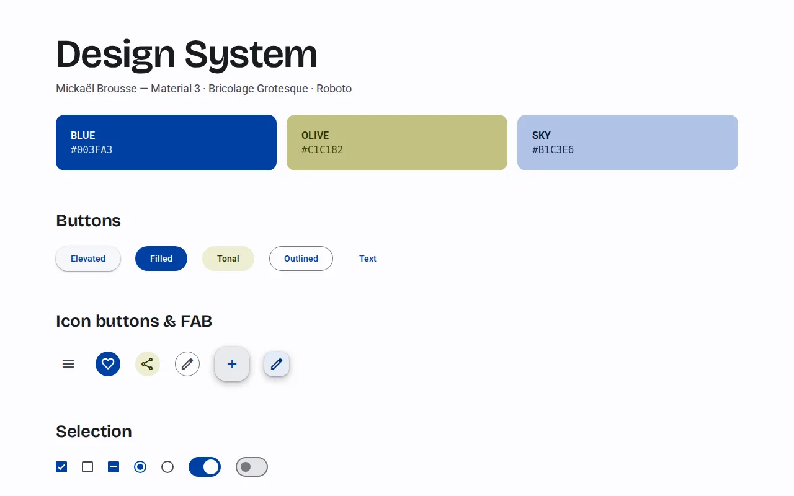
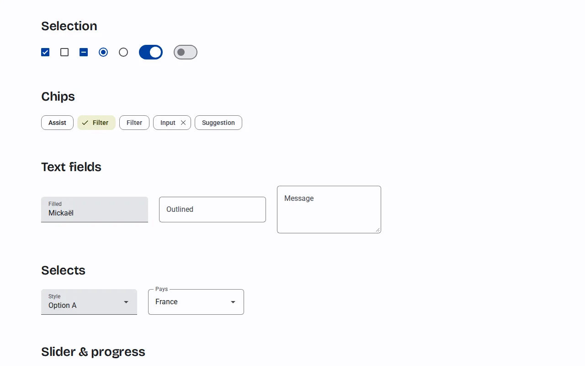
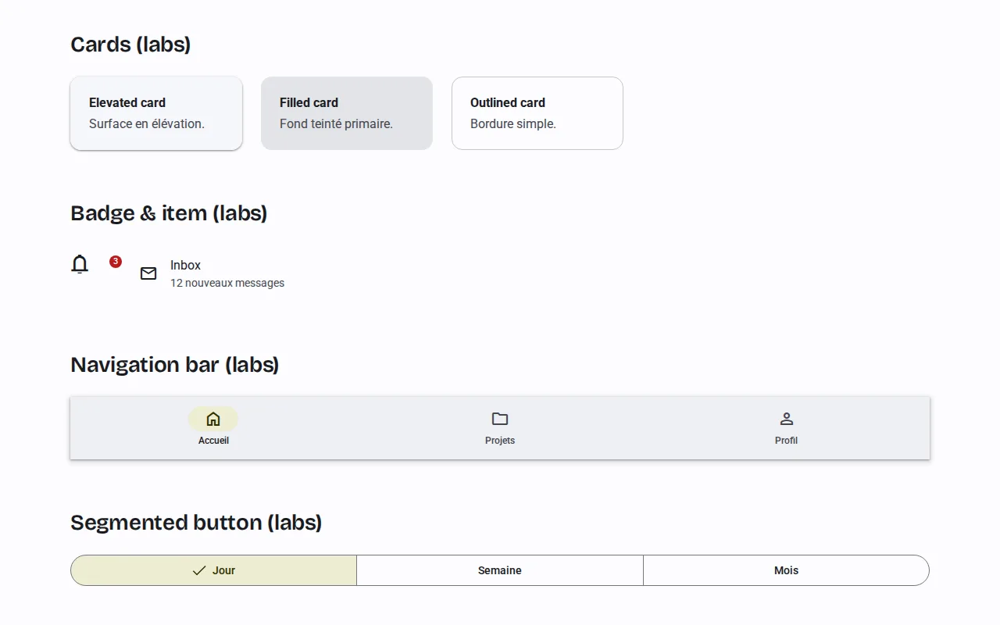
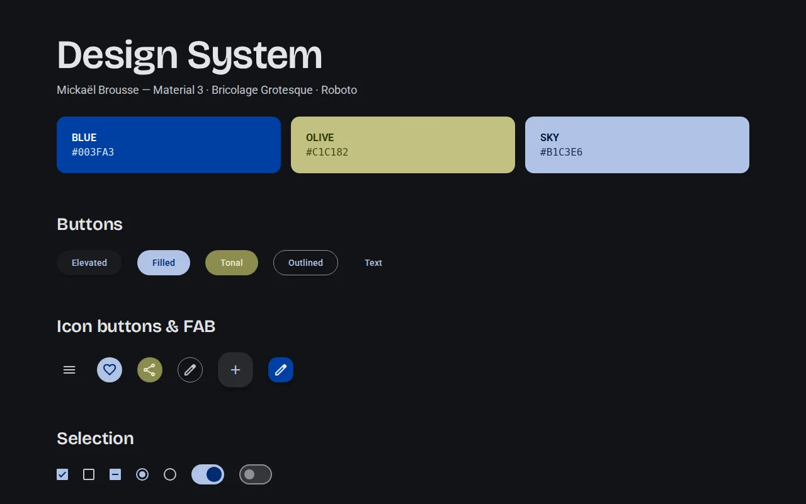

DesignDesign · 2026 · Private repositoryDépôt privé
Design System.
A reusable design system, so every new project starts from the same foundations.Un design system réutilisable, pour que chaque nouveau projet parte des mêmes fondations.
The code is private. This page shows what the project does and how it works.Le code est privé. Cette page montre ce que fait le projet et comment il fonctionne.

The starting pointLe point de départ
I wanted code that saves me from rebuilding a design system every time I start a new project.Je voulais un code qui m’évite de rebâtir un design system à chaque fois que je commence un nouveau travail.
Mickaël Brousse
In shortEn bref
- Material 3 web components (
@material/web, built on Lit), rethemed with my palette: Blue#003FA3as primary, Olive as secondary, Sky as tertiary.Composants web Material 3 (@material/web, basés sur Lit), rethémés avec ma palette : Bleu#003FA3en primaire, Olive en secondaire, Ciel en tertiaire. - Typography: Bricolage Grotesque for display and headlines, Roboto for body and labels, both shipped as local variable fonts.Typographie : Bricolage Grotesque pour les titres, Roboto pour le texte et les libellés, toutes deux livrées en polices variables locales.
- Native web components: they work in React, Next.js, Vue, Svelte, Astro or plain HTML, without wrappers.Composants web natifs : ils fonctionnent dans React, Next.js, Vue, Svelte, Astro ou en HTML pur, sans adaptateur.
- Dark mode follows the system setting automatically.Mode sombre qui suit automatiquement le réglage du système.
- Buttons, chips, text fields, selects, dialogs, menus, tabs, lists, plus Labs components (cards, navigation bar, segmented buttons). One npm install and two imports to use it.Boutons, chips, champs, listes déroulantes, dialogues, menus, onglets, listes, plus les composants Labs (cartes, barre de navigation, boutons segmentés). Une installation npm et deux imports pour l’utiliser.
From source to screenDe la source à l’écran
- 01Brand tokensTokens de marqueBlue, Olive, Sky and their tintsBleu, Olive, Ciel et leurs nuances
- 02theme.csstheme.cssMapped onto Material 3 system tokens, light and darkBranchés sur les tokens système Material 3, clair et sombre
- 03Material WebMaterial WebLit components read those tokensLes composants Lit lisent ces tokens
- 04Any projectN’importe quel projetReact, Next.js, Vue, Astro, HTMLReact, Next.js, Vue, Astro, HTML
ScreensÉcrans



Where it standsOù il en est
How fast an AI assistant understands my design system.La vitesse de compréhension de mon design system par l’IA.
Due for an update: this version is too old.À mettre à jour : cette version est trop ancienne.